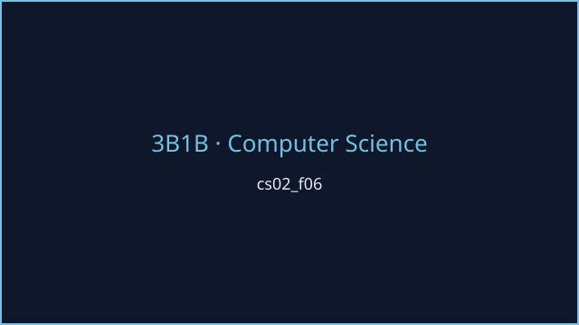

আগের পাঠে আমরা দেখেছি—ভালো মডেল ভালো সংকোচন দেয়। কিন্তু বাস্তবে আমাদের মডেল কখনোই নিখুঁত হয় না। যদি আমরা ভুল সম্ভাবনা ব্যবহার করে কোড বানাই, তবে বেশি বিট লাগবে। এই অতিরিক্ত খরচটিকেই আমরা পরিমাপ করব।
ভুল মডেলের কারণে যে বাড়তি বিট খরচ হয়, তা কত? এর সুষ্ঠু পরিমাপই পরবর্তী ধাপ।
ধরা যাক সত্যিকারের বন্টন $p$, আর আমাদের মডেলের অনুমান $q$। আমরা প্রতিটি প্রতীকের জন্য $-\log_2 q(x)$ বিট ব্যবহার করি, কিন্তু প্রতীকগুলো আসে $p$ অনুযায়ী। তাই গড় খরচ হবে—
এটিকে বলা হয় ক্রস-এন্ট্রপি। মনে রাখবেন—এন্ট্রপি $H(p)$ হলো নিখুঁত মডেলের সর্বনিম্ন খরচ; ক্রস-এন্ট্রপি হলো আমাদের মডেলের প্রকৃত খরচ।
ক্রস-এন্ট্রপি থেকে আসল এন্ট্রপি বাদ দিলে যা থাকে, তা হলো ''অতিরিক্ত খরচ''—একে বলা হয় কেএল ডাইভারজেন্স বা রিলেটিভ এন্ট্রপি।
যখন $p=q$, তখন $D_{\mathrm{KL}}=0$। দুই বন্টন যত আলাদা, এই মান তত বড়। মনে রাখবেন কেএল ''দূরত্ব'' নয়—এটি প্রতিসম নয়।
ক্রস-এন্ট্রপি = এন্ট্রপি + কেএল ডাইভারজেন্স। এই সরল সমীকরণটি পুরো মেশিন লার্নিংয়ের ভিত্তি।
নিউরাল নেটওয়ার্ক যখন পরের শব্দের সম্ভাবনা অনুমান করে, তখন প্রশিক্ষণে আমরা ঠিক ক্রস-এন্ট্রপিই কমিয়ে থাকি। সত্যিকারের উত্তর $p$ ও মডেলের ভবিষ্যদ্বাণী $q$-র ক্রস-এন্ট্রপি যত কম, মডেল তত ভালো।
এই কারণে ক্রস-এন্ট্রপি আজ বিশ্বের সবচেয়ে ব্যবহৃত লস ফাংশনগুলোর একটি—ভাষা মডেল, চিত্র শ্রেণীবিভাগ, সব জায়গায়।
এন্ট্রপি হলো সর্বনিম্ন সম্ভাব্য খরচ; ক্রস-এন্ট্রপি হলো আপনার মডেলের খরচ; আর কেএল হলো এই দুটির পার্থক্য। এই তিনটি ধারণা তথ্য তত্ত্ব ও কৃত্রিম বুদ্ধিমত্তার ভাষা।
নিচের ইন্টারেক্টিভ উপাদান ও কুইজের মাধ্যমে পাঠের ধারণা নিজে যাচাই করুন।
